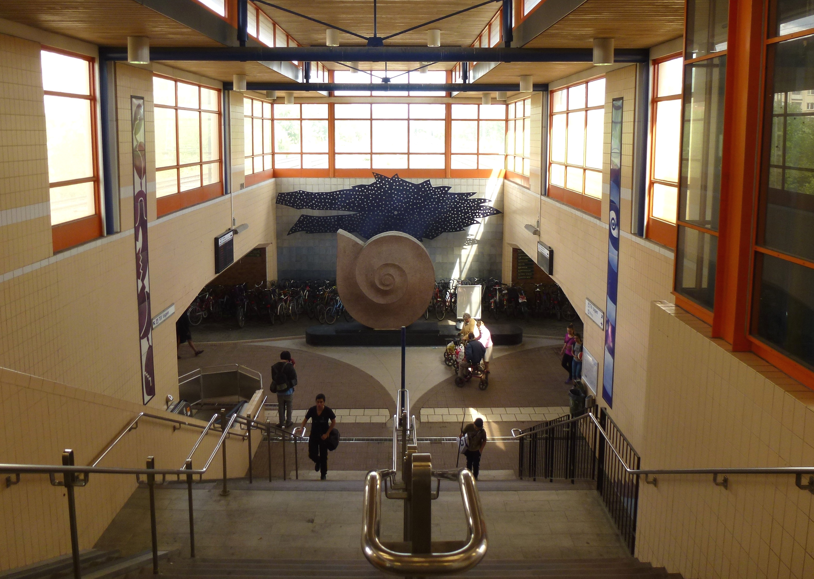

Here is some information on Huddinge kommun on eng.
Huddinge is a vibrant and diverse community located just south of Stockholm. It’s known for its welcoming atmosphere, with a mix of families, students, and professionals living together.
The area offers a good balance of urban convenience and access to nature, making it popular for people seeking a relaxed yet connected lifestyle.
The community is supported by excellent schools, cultural activities, and local events that bring people together. With shopping centers, sports clubs, and public services, Huddinge provides everything residents need for everyday life.
Overall, it’s a friendly and inclusive place where people enjoy both community spirit and a strong connection to nature.
Huddinge, just south of Stockholm, is known for its beautiful natural landscapes. The area features dense forests, clear lakes like Orlången and Gömmaren, and protected nature reserves.
These spots offer great opportunities for hiking, biking, swimming, and birdwatching. The local wildlife includes deer, birds, and fish, while the forests bloom with wildflowers and berries.
Huddinge is a peaceful escape for anyone who loves outdoor activities year-round.